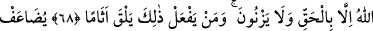

KİM TEVBE EDİP
İYİ DAVRANIŞ GÖSTERİRSE
68. Yine onlar ki, Allah ile beraber (tuttukları) başka bir ilâha yalvarmazlar,
Allah’ın haram kıldığı cana haksız yere kıymazlar ve zina etmezler. Bunları yapan,
günahı (nın cezâsını) bulur;
69. Kıyâmet günü azâbı kat kat artırılır ve onda (azapta) alçaltılmış olarak
devamlı kalır.
70. Ancak tevbe ve îman edip sâlih amel işleyenler başkadır; Allah onların
kötülüklerini iyiliklere çevirir. Allah çok bağışlayıcıdır, engin merhamet sâhibidir.
71. Kim tevbe edip iyi davranış gösterirse, şüphesiz o, tevbesi kabul edilmiş
olarak Allah’a döner.
“Yine onlar ki, Allah ile beraber (tuttukları)” put gibi “başka bir ilâha
yalvarmazlar,” ibâdet etmezler. Yâni Allah Teâlâ’ya ortak koşmazlar.
Üç türlü şirk olduğu söylenir:
1- Allah Teâlâ’dan başkasına tapmak.
2- Kendisine günah işlemeyi emreden bir mahlûka itâat etmek.
3- Allah’ın rızâsı dışında amel etmek.
Bunların birincisi küfür, diğer ikisi günah/mâsıyettir.
et-Te’vîlâtü’n-Necmiyye’de der ki: “Yâni onlar ihtiyaçlarını ağyâra/Allah’ın
dışındaki varlıklara arzetmezler. Onlardan bir fayda ve zarar ummazlar. Yine amellerine
riyâ ve süm‘a karıştırmazlar, görsünler ve duysunlar diye amel etmezler. Allah ile
birlikte başka bir matlub taleb etmez, O’nunla beraber başka bir sevgili sevmezler.
Bilakis Allah’ı Allah’tan isterler, O’nu O’nunla severler.
Sâib der ki:
Gönül harîmine Hak’tan gayrını koyuyorsun, niçin?